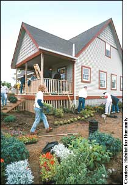

The construction of an average-sized home (2,000 square feet) usually results in 8,000 pounds of construction waste. Add that to the waste generated by demolition, and the figures are astounding: Every year in the United States, 136 million tons of construction and demolition waste are tossed into landfills. This debris amounts to more than half of all landfill waste - but if handled properly, much of it can be diverted and reused. Here are several ways you can locate reclaimed and recycled construction materials:
“Freecycling” (www.freecycle.org) is an easy-to-use Internet service for people who want to trade things locally. Membership is free, and after a quick registration, each local group allows its participants to post messages for objects they want to unload or request items they need. Although it is not limited to construction materials, there are plenty of building treasures being swapped by more than 1.3 million members in about 2,700 communities. Also try www.build. recycle.net and www.sustainableabc.com for lists of similar organizations across the country. Internet auctions such as those on eBay frequently include construction materials. The trick with eBay is to make sure you actually are purchasing a recycled product, rather than a new one.
Another good place to find used building materials is your own neighborhood. Your neighbors who are remodeling probably will be thrilled that you want to take that old bathtub, shower door or fireplace mantel off their hands. Houses set for demolition also are gold mines for materials, especially wood, hardware and fixtures such as sinks and cabinets.
Habitat for Humanity operates retail outlets called ReStores that sell used and surplus building materials at a fraction of their regular prices. The proceeds from ReStores help fund construction of Habitat for Humanity housing. Local construction companies and salvage yards often are willing to unload their “waste” onto eager takers. Look up “used,” “recycled,” “salvaged,” “antique” or “junk” in the Yellow Pages.
The technology to reconstitute many construction waste items into new products is rapidly progressing. Many states recycle drywall, and a few recycle carpet. Several kinds of glass can be made into new windows. Cardboard, paper and agricultural fibers can be turned into lightweight home insulation or particleboard. Rastra building blocks are made from recycled plastic foam and concrete.
Some professional builders are making it easier than ever to reduce, reuse and recycle when building or remodeling a home. Many contractors and companies will use reclaimed or recycled materials whenever possible. Visit the Green Building Professionals Directory for a list of resources near you.
Plan ahead to reduce waste when tackling your own building or renovation projects, and design with conservation in mind. Building with standard drywall dimensions, for example, will save you time, money and materials. Avoid buying excessively packaged supplies.
Another good habit in home remodeling is practicing deconstruction rather than demolition. Before attempting to recycle your waste, try to identify who will receive it. This will make on-site separation go much more smoothly.
No matter how hard you try to conserve, you still may be left with “junk” when your project is finished. You may find a home for those materials on eBay, in freecycling groups or down the street. Local charities, too, will benefit from your leftovers; Habitat for Humanity even accepts paints and solvents. Check with your local solid waste facility or www.earth911.com to see what materials you can recycle in your area.
www.habitat.org/env/restores.aspx
directory.greenbuilder.com/search.gbpro
|
 HABITAT FOR HUMANITY Habitat for Humanity uses reclaimed materials for many of its construction and renovation projects, such as the house shown above. |
|
|